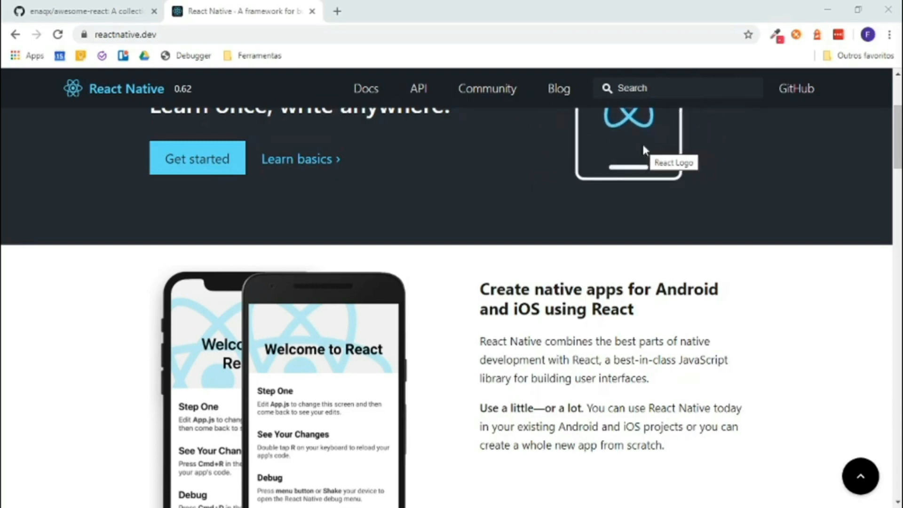
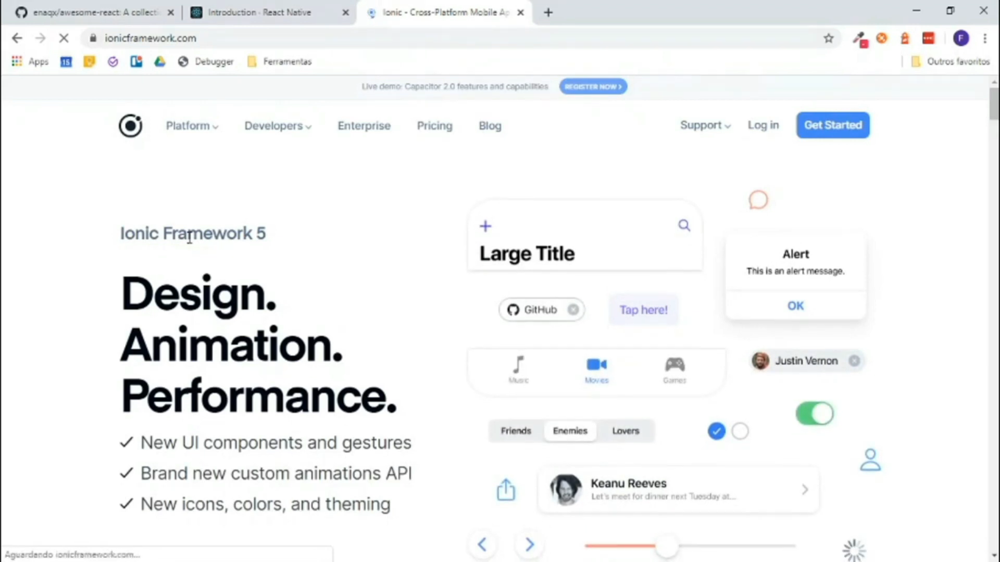

Criado pelo Facebook em 2015 sobre a licença MIT, o React Native é um Framework para desenvolvimento de aplicativos móveis multiplataforma.
Um Framework é um facilitador no desenvolvimento de diversas aplicações e, sem dúvida, sua utilização poupa tempo e custos para quem utiliza, pois de forma mais básica, é um conjunto de bibliotecas utilizadas para criar uma base, onde as aplicações são construídas, um otimizador de recursos.
Baseado no React, framework JS para desenvolvimento web, o React Native possibilita a criação de aplicações móvel multiplataforma (Android e iOS) utilizando apenas Javascript. Porém, diferente de outros frameworks com esta mesma finalidade (Cordova, por exemplo), todo o código desenvolvido com o React Native é convertido para linguagem nativa do sistema operacional, o que torna o app muito mais fluido.
Características
O React Native possui diversas características marcantes e fundamentais para sua ampla adoção, como podemos ver abaixo:
Empresas que o utilizam
Por ser amplamente adotado na comunidade mobile, o React Native atraiu a atenção de diversas empresas, que fizeram questão de utilizá-lo em suas soluções mobile. Dentre estas empresas, podemos citar:
Como vimos acima, a adoção do React Native por grandes empresas é bem nítida, o que o torna ainda mais completo e utilizado por todo o mundo.
Sintaxe
Apesar de ser baseado no React, o React Native não utiliza tags HTML para a criação de seus elementos. Ao invés disso, os elementos são criados utilizando tags nativas do React Native, como podemos ver no trecho de código abaixo:
import React from 'react';
import { Text } from 'react-native';
export default function Ola() {
return (
Olá, mundo!
);
}
O Component serve para exibir um texto no aplicativo. Este componente é nativo do React Native, além de tantos outros que podem ser vistos em sua documentação oficial.
Podemos concluir que…
É notável a crescente demanda do uso de aplicativos móveis nos últimos anos. Pensando nisso, diversas empresas desenvolvem suas soluções para facilitar a criação destes aplicativos. Com o React Native, o Facebook lançou uma solução incrível para o desenvolvimento multiplataforma utilizando apenas código Javascript, o que facilita (e muito) os desenvolvedores que já possuem conhecimento em desenvolvimento web e até os que não possuem, já que é um framework com alta curva de aprendizado.
O Ionic é um Framework Open Source gratuito sobre a licença MIT para desenvolvimento de aplicações mobile híbridas.
Aplicações híbridas são aplicativos móveis construídos de maneira alternativa a aplicações nativa. São construídos, geralmente, utilizando HTML, CSS e JavaScript, desta maneira se tornaram extremamente populares, pois permite o desenvolvimento multiplataforma, utilizando o mesmo HTML para diferentes sistemas operacionais.
Sendo assim, o que é o Ionic?
Desenvolvido por Max Lynch, Ben Sperry e Adam Bradley da Drifty Co., sua primeira versão teve seu lançamento em 2013 e atualmente encontra-se na versão 4.
Como dito acima, é um Framework para criação de aplicações móveis e desktop de alto desempenho e qualidade, que utiliza as tecnologias web HTML, CSS e JavaScript.
Como diz em seu site, o Ionic ajuda as equipes a criarem e distribuírem belos aplicativos híbridos em várias plataformas, possuindo foco na experiência do usuário ou interação do usuário com o aplicativo (controles, interação, gestos, animações).
Projetado para funcionar e ser exibido em diferentes plataformas, possui um design limpo, simples e funcional, com componentes padrões, tipografia, paradigmas interativos e diversos templates.
Além disso, possui um cliente de linha de comando (CLI) para gerenciar todo projeto criado com o Ionic. O CLI é uma ferramenta que cria aplicativos Ionic de forma rápida e fornece vários comandos úteis para facilitar o desenvolvimento utilizando o Framework. Possui um servidor de desenvolvimento integrado, ferramentas de compilação e depuração, entre outros benefícios.
Para instalar o Ionic CLI basta clicar aqui.
Por que aprender Ionic?
O futuro do Ionic
Como dito acima, o Ionic Framework encontra-se na versão 4, lançado no ano de 2019. Esta versão mais recente foi reprojetada para funcionar como uma biblioteca independente de componentes da web, com integrações para os mais recentes frameworks JavaScript, como o Angular, Vue e React. Ou seja, com a nova versão do Ionic, podemos criar aplicativos híbridos utilizando qualquer framework javascript, como Vue, Angular e React.
O Ionic é um excelente framework que, com certeza, poderá ser utilizado para criar aplicativos dos mais diversos segmentos. Sendo assim, este framework é um forte candidato a ser o seu próximo queridinho no desenvolvimento de aplicativos móveis.
